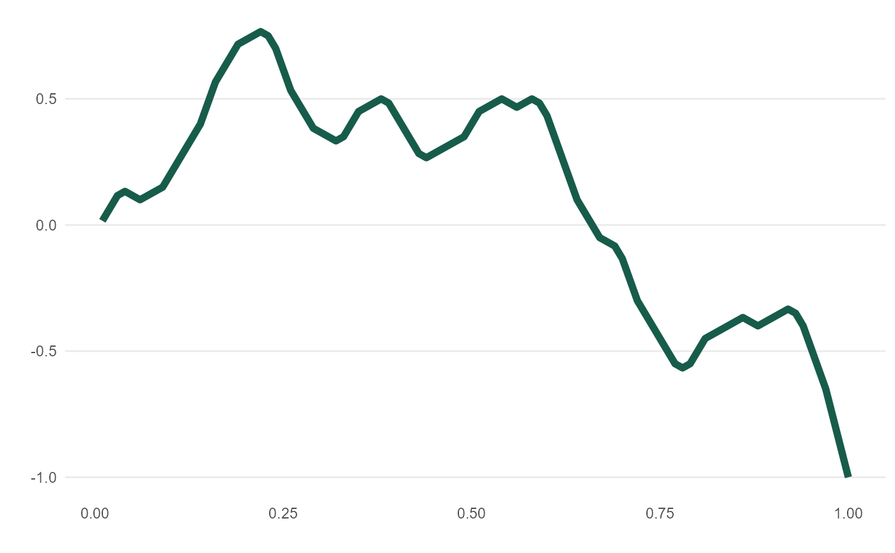

meandr() offers a calculus-driven approach to simulating random time-series behavior.
Inputs n_nodes and wt serve as tuning knobs for overall smoothness and direction, respectively.
For greater control over curve shape, see create_path()
meandr( n_nodes = 100L, wt = c(1, -1), gain = 0.75, n_points = 100L, scale = 1, seed = NULL )
| n_nodes | An integer. Defines number of distinct inflection points in function. |
|---|---|
| wt | A numeric vector of values. These will be sampled (with replacement) |
| gain | Tuning parameter. |
| n_points | An integer. Controls output "resolution". (Underlying calculus is unaffected). |
| scale | A number. Adjusts all y-values so that |
| seed | A number passed to |
A tibble containing coordinates of resulting function.
For wt, recommend using length 2 comprising of positive and negative element -
though any numeric vector will be accepted.
Default value, c(1, -1), will tend to produce curves with greatest directional variety.
As magnitude between wt[1] and wt[2] deviates, overall curve will veer to +/- Inf.
Each call to meandr() follows below execution flow:
(1) Build piecewise function, "f2", of "nodes" sampled (with replacement) from wt.
(2) Integrate "f2" twice to obtain continuously differentiable function, "f".
(3) Interval (0, 1] is cut into n_points - resulting values passed to "f".
(4) Output coordinates in tibble
# See vignette("meandr") # each call produces unique output meandr()#> # A tibble: 100 x 2 #> t f #> <dbl> <dbl> #> 1 0.01 -0.0313 #> 2 0.02 -0.125 #> 3 0.03 -0.219 #> 4 0.04 -0.25 #> 5 0.05 -0.281 #> 6 0.06 -0.313 #> 7 0.0700 -0.344 #> 8 0.08 -0.375 #> 9 0.09 -0.344 #> 10 0.10 -0.25 #> # ... with 90 more rows# n_nodes has the most impact on curve complexity curve1 <- meandr(n_nodes = 5) mplot(curve1) # simple piecewise quadratic